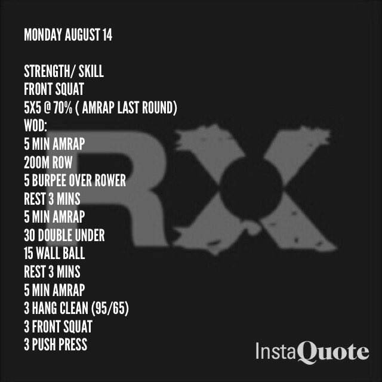
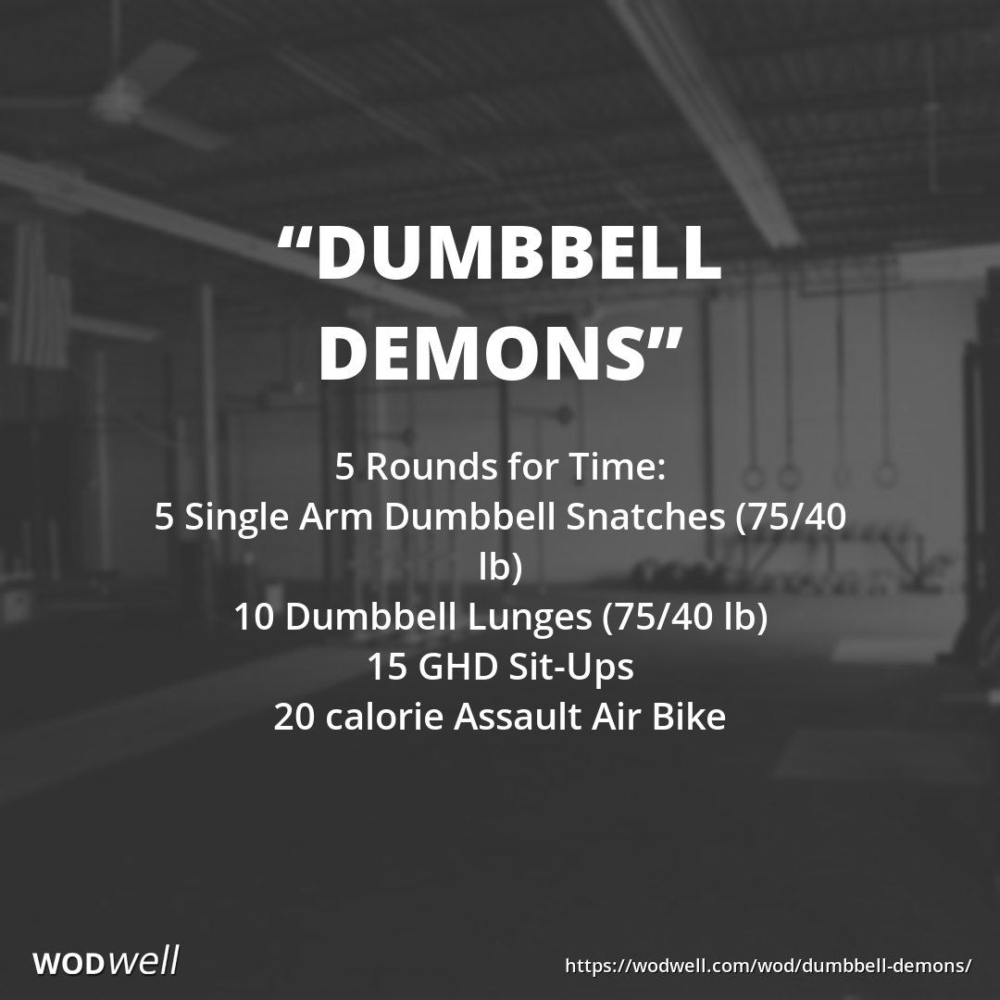

 
How to start doing CrossFit workouts??
f you choose to visit a CrossFit center or follow a protocol you find online, you’ll find that CrossFit workouts are usually done by following the “Workout of the Day,” also called the WOD. WODs can seem a bit confusing if you’re new to CrossFit, so here’s how they work:
First, it helps to get the basic terminology down. A “rep” (or repetition) is one iteration of a movement, such as one bench press or one squat. A “set” is a group of reps, such as 10 reps or squats. Each WOD usually features a certain number of sets of various movements. The pattern is to complete the sets, rest, repeat, rest, repeat and so on.
The amount of time for resting between sets depends on a few different factors, like your ability to recover and the primary goal of the WOD. Sometimes you might want to try having your WOD be timed, so in this case your rest time between sets would likely be shorter so you can complete the entire CrossFit workout quicker.
If you attend a class at a CrossFit Box, a WOD description might be written in several different ways. For example, doing a WOD in “rounds” would translate to doing a set of several exercises, resting and then repeating the whole circuit again. As an example, this type of WOD could be written as “21-15-9” which would indicate you perform one exercise 21 times, followed by another exercise 21 times and so on. Then you start from the beginning and do the first exercise 15 times, second exercise 15 times, etc.
- Weekly Plan
- Monday
3 rounds for time of:
Run 800 meters
50 back extensions
50 sit-ups
10 rounds each for time,of:
100-meter sprint
Rest 90 seconds
6 rounds for time of:
2 rope climbs
10 ring dips
12 GHD sit-ups
3 rounds of:
Burpees
Power snatches
Box jumps
Thrusters
4 rounds for time of:
Run 400m
50 walking lunges
REST